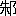

一
魯の
卞の
游侠の徒、
仲由、
字は子路という者が、
近頃賢者の
噂も高い
学匠・
陬人孔丘を
辱しめてくれようものと思い立った。
似而非賢者
何程のことやあらんと、
蓬頭突鬢・
垂冠・
短後の衣という
服装で、左手に
雄
、右手に
牡豚を引提げ、
勢猛に、孔丘が家を指して
出掛ける。
を
揺り豚を
奮い、
嗷しい
脣吻の音をもって、
儒家の
絃歌講誦の声を
擾そうというのである。
けたたましい動物の
叫びと共に
眼を
瞋らして
跳び
込んで来た青年と、
圜冠句履緩く

を帯びて
几に
凭った温顔の孔子との間に、問答が始まる。
「
汝、何をか好む？」と孔子が聞く。
「我、
長剣を好む。」と青年は
昂然として言い放つ。
孔子は思わずニコリとした。青年の声や態度の中に、余りに
稚気満々たる
誇負を見たからである。血色のいい・
眉の太い・眼のはっきりした・見るからに
精悍そうな青年の顔には、しかし、どこか、愛すべき素直さがおのずと現れているように思われる。再び孔子が聞く。
「学はすなわちいかん？」
「学、
豈、益あらんや。」もともとこれを言うのが目的なのだから、子路は勢込んで
怒鳴るように答える。
学の
権威について
云々されては
微笑ってばかりもいられない。孔子は
諄々として学の必要を説き始める。
人君にして
諫臣が無ければ
正を失い、士にして教友が無ければ
聴を失う。
樹も
縄を受けて始めて直くなるのではないか。馬に
策が、弓に
檠が必要なように、人にも、その
放恣な性情を
矯める教学が、どうして必要でなかろうぞ。
匡し
理め
磨いて、始めて
ものは有用の材となるのだ。
後世に残された語録の
字面などからは
到底想像も出来ぬ・極めて説得的な弁舌を孔子は
有っていた。言葉の内容ばかりでなく、その
穏かな音声・
抑揚の中にも、それを語る時の極めて確信に
充ちた態度の中にも、どうしても聴者を説得せずにはおかないものがある。青年の態度からは次第に
反抗の色が消えて、ようやく
謹聴の様子に変って来る。
「しかし」と、それでも子路はなお
逆襲する気力を失わない。南山の竹は
揉めずして自ら直く、
斬ってこれを用うれば
犀革の厚きをも通すと聞いている。して見れば、天性優れたる者にとって、何の学ぶ必要があろうか？
孔子にとって、こんな幼稚な
譬喩を打破るほどたやすい事はない。汝の
云うその南山の竹に矢の羽をつけ
鏃を付けてこれを
礪いたならば、ただに犀革を通すのみではあるまいに、と孔子に言われた時、愛すべき単純な若者は返す言葉に
窮した
［＃「窮した」は底本では「窮しした」］。顔を
赧らめ、しばらく孔子の前に
突立ったまま何か考えている様子だったが、急に
と豚とを
抛り出し、頭を
低れて、「
謹しんで教を受けん。」と降参した。単に言葉に窮したためではない。実は、室に入って孔子の
容を見、その最初の一言を聞いた時、直ちに
豚の
場違いであることを感じ、
己と余りにも
懸絶した相手の大きさに
圧倒されていたのである。
即日、子路は師弟の礼を
執って孔子の門に入った。
二
このような人間を、子路は見たことがない。力
千鈞の
鼎を挙げる勇者を
彼は見たことがある。
明千里の外を察する
智者の話も聞いたことがある。しかし、孔子に在るものは、決してそんな
怪物めいた異常さではない。ただ最も常識的な完成に過ぎないのである。知情意のおのおのから肉体的の諸能力に至るまで、実に
平凡に、しかし実に
伸び伸びと発達した見事さである。一つ一つの能力の
優秀さが全然目立たないほど、
過不及無く
均衡のとれた豊かさは、子路にとって
正しく初めて見る所のものであった。
闊達自在、いささかの道学者
臭も無いのに子路は
驚く。この人は苦労人だなとすぐに子路は感じた。
可笑しいことに、子路の
誇る武芸や
膂力においてさえ孔子の方が上なのである。ただそれを
平生用いないだけのことだ。侠者子路はまずこの点で
度胆を
抜かれた。
放蕩無頼の生活にも経験があるのではないかと思われる位、あらゆる人間への
鋭い心理的
洞察がある。そういう一面から、また一方、極めて高く
汚れないその理想主義に至るまでの
幅の広さを考えると、子路はウーンと心の底から
呻らずにはいられない。とにかく、この人はどこへ持って行っても
大丈夫な人だ。
潔癖な
倫理的な見方からしても
大丈夫だし、最も世俗的な意味から
云っても大丈夫だ。子路が今までに会った人間の
偉さは、どれも
皆その利用価値の中に在った。これこれの役に立つから偉いというに過ぎない。孔子の場合は全然違う。ただそこに孔子という人間が存在するというだけで
充分なのだ。少くとも子路には、そう思えた。彼はすっかり
心酔してしまった。門に入っていまだ一月ならずして、もはや、この精神的支柱から
離れ得ない自分を感じていた。
後年の孔子の長い
放浪の
艱苦を通じて、子路ほど
欣然として従った者は無い。それは、孔子の弟子たることによって仕官の
途を求めようとするのでもなく、また、
滑稽なことに、師の傍に在って己の才徳を磨こうとするのでさえもなかった。死に至るまで
渝らなかった・
極端に求むる所の無い・
純粋な敬愛の情だけが、この男を師の傍に引留めたのである。かつて長剣を手離せなかったように、子路は今は何としてもこの人から離れられなくなっていた。
その時、
四十而不惑といった・その四十
歳に孔子はまだ達していなかった。子路よりわずか九歳の年長に過ぎないのだが、子路はその
年齢の差をほとんど無限の
距離に感じていた。
孔子は孔子で、この弟子の際立った
馴らし難さに驚いている。単に勇を好むとか
柔を
嫌うとかいうならば
幾らでも類はあるが、この弟子ほど
ものの形を
軽蔑する男も
珍しい。究極は精神に帰すると云いじょう、礼なるものはすべて形から入らねばならぬのに、子路という男は、その形からはいって行くという筋道を容易に受けつけないのである。「礼と云い礼と云う。
玉帛を云わんや。
楽と云い楽と云う。
鐘鼓を云わんや。」などというと大いに
欣んで聞いているが、
曲礼の細則を説く段になるとにわかに
詰まらなさそうな顔をする。形式主義への・この本能的
忌避と
闘ってこの男に礼楽を教えるのは、孔子にとってもなかなかの難事であった。が、それ以上に、これを習うことが子路にとっての難事業であった。子路が
頼るのは孔子という人間の厚みだけである。その厚みが、日常の区々たる細行の集積であるとは、子路には考えられない。
本があって始めて末が生ずるのだと彼は言う。しかしその
本をいかにして養うかについての実際的な
考慮が足りないとて、いつも孔子に
叱られるのである。彼が孔子に心服するのは一つのこと。彼が孔子の感化を直ちに受けつけたかどうかは、また別の事に属する。
上智と
下愚は移り難いと言った時、孔子は子路のことを考えに入れていなかった。欠点だらけではあっても、子路を下愚とは孔子も考えない。孔子はこの
剽悍な弟子の無類の美点を
誰よりも高く買っている。それはこの男の純粋な
没利害性のことだ。この種の美しさは、この国の人々の間に在っては余りにも
稀なので、子路のこの
傾向は、孔子以外の誰からも徳としては認められない。むしろ一種の不可解な
愚かさとして映るに過ぎないのである。しかし、子路の勇も政治的才幹も、この珍しい愚かさに比べれば、ものの数でないことを、孔子だけは良く知っていた。
師の言に従って
己を
抑え、とにもかくにも
形に就こうとしたのは、親に対する態度においてであった。孔子の門に入って以来、乱暴者の子路が急に親孝行になったという
親戚中の評判である。
褒められて子路は変な気がした。親孝行どころか、
嘘ばかりついているような気がして仕方が無いからである。
我儘を云って親を
手古摺らせていた
頃の方が、どう考えても正直だったのだ。今の自分の
偽りに喜ばされている親達が少々情無くも思われる。こまかい心理
分析家ではないけれども、極めて正直な人間だったので、こんな事にも気が付くのである。ずっと後年になって、ある時
突然、親の老いたことに気が付き、己の幼かった頃の両親の元気な姿を思出したら、急に
泪が出て来た。その時以来、子路の親孝行は無類の
献身的なものとなるのだが、とにかく、それまでの彼の
俄か孝行はこんな
工合であった。
三
ある日子路が街を歩いて行くと、かつての友人の二三に出会った。無頼とは云えぬまでも
放縦にして
拘わる所の無い游侠の徒である。子路は立止ってしばらく話した。その
中に彼
等の一人が子路の
服装をじろじろ
見廻し、やあ、これが儒服という
奴か？
随分みすぼらしい
なりだな、と言った。長剣が
恋しくはないかい、とも言った。子路が相手にしないでいると、今度は
聞捨のならぬことを言出した。どうだい。あの孔丘という先生はなかなかの
喰わせものだって云うじゃないか。しかつめらしい顔をして心にもない事を誠しやかに説いていると、えらく
甘い
汁が吸えるものと見えるなあ。別に悪意がある訳ではなく、
心安立てからのいつもの毒舌だったが、子路は顔色を変えた。いきなりその男の
胸倉を
掴み、右手の
拳をしたたか
横面に飛ばした。二つ三つ続け様に
喰わしてから手を離すと、相手は意気地なく
倒れた。
呆気に取られている他の連中に向っても子路は
挑戦的な眼を向けたが、子路の
剛勇を知る彼等は向って来ようともしない。
殴られた男を左右から
扶け起し、
捨台詞一つ残さずに
こそこそと立去った。
いつかこの事が孔子の耳に入ったものと見える。子路が呼ばれて師の前に出て行った時、直接には
触れないながら、次のようなことを聞かされねばならなかった。
古の君子は忠をもって質となし仁をもって衛となした。不善ある時はすなわち忠をもってこれを化し、
侵暴ある時はすなわち仁をもってこれを固うした。
腕力の必要を見ぬゆえんである。とかく小人は
不遜をもって勇と
見做し勝ちだが、君子の勇とは義を立つることの
謂である云々。神妙に子路は聞いていた。
数日後、子路がまた街を歩いていると、往来の
木蔭で
閑人達の
盛んに弁じている声が耳に入った。それがどうやら孔子の噂のようである。――
昔、昔、と何でも
古を
担ぎ出して今を
貶す。誰も昔を見たことがないのだから何とでも言える訳さ。しかし昔の道を
杓子定規にそのまま
履んで、それで
巧く世が治まるくらいなら、誰も苦労はしないよ。
俺達にとっては、死んだ周公よりも生ける
陽虎様の方が偉いということになるのさ。
下剋上の世であった。政治の実権が
魯侯からその大夫たる
季孫氏の手に移り、それが今や
更に季孫氏の臣たる陽虎という野心家の手に移ろうとしている。しゃべっている当人はあるいは陽虎の身内の者かも知れない。
――ところで、その陽虎様がこの間から孔丘を用いようと何度も
迎えを出されたのに、何と、孔丘の方からそれを
避けているというじゃないか。口では大層な事を言っていても、実際の生きた政治には
まるで自信が無いのだろうよ。あの
手合はね。
子路は
背後から人々を分けて、つかつかと弁者の前に進み出た。人々は彼が孔門の徒であることをすぐに認めた。今まで得々と弁じ立てていた当の老人は、顔色を失い、意味も無く子路の前に頭を下げてから
人垣の背後に身を
隠した。
眥を決した子路の
形相が余りにすさまじかったのであろう。
その後しばらく、同じような事が処々で起った。
肩を
怒らせ
炯々と眼を光らせた子路の姿が遠くから見え出すと、人々は孔子を
刺る口を
噤むようになった。
子路はこの事で度々師に叱られるが、自分でもどうしようもない。彼は彼なりに心の中では
言分が無いでもない。いわゆる君子なるものが俺と同じ強さの
忿怒を感じてなおかつそれを抑え得るのだったら、そりゃ偉い。しかし、実際は、俺ほど強く怒りを感じやしないんだ。少くとも、抑え得る程度に弱くしか感じていないのだ。きっと…………。
一年ほど
経ってから孔子が苦笑と共に
嘆じた。
由が門に入ってから自分は悪言を耳にしなくなったと。
四
ある時、子路が一室で
瑟を
鼓していた。
孔子はそれを別室で聞いていたが、しばらくして
傍らなる
冉有に向って言った。あの瑟の音を聞くがよい。
暴
の気がおのずから
漲っているではないか。君子の音は
温柔にして
中におり、生育の気を養うものでなければならぬ。昔
舜は
五絃琴を
弾じて南風の詩を作った。南風の
薫ずるやもって我が民の
慍を解くべし。南風の時なるやもって我が民の財を
阜にすべしと。今
由の音を聞くに、誠に
殺伐激越、南音に
非ずして北声に類するものだ。弾者の
荒怠暴恣の心状をこれほど明らかに映し出したものはない。――
後、冉有が子路の所へ行って
夫子の言葉を告げた。
子路は元々自分に楽才の
乏しいことを知っている。そして自らそれを耳と手のせいに帰していた。しかし、それが実はもっと深い精神の持ち方から来ているのだと聞かされた時、彼は
愕然として
懼れた。大切なのは手の習練ではない。もっと深く考えねばならぬ。彼は一室に
閉じ
籠り、静思して
喰わず、もって
骨立するに至った。数日の後、ようやく思い得たと信じて、再び瑟を執った。そうして、極めて
恐る恐る弾じた。その音を
洩れ聞いた孔子は、今度は別に何も言わなかった。
咎めるような顔色も見えない。
子貢が子路の所へ行ってそのむねを告げた。師の咎が無かったと聞いて子路は
嬉しげに笑った。
人の良い兄弟子の嬉しそうな
笑顔を見て、若い子貢も微笑を禁じ得ない。
聡明な子貢は
ちゃんと知っている。子路の
奏でる音が
依然として殺伐な北声に満ちていることを。そうして、夫子がそれを咎めたまわぬのは、
痩せ細るまで苦しんで考え込んだ子路の一本気を
愍まれたために過ぎないことを。
五
弟子の中で、子路ほど孔子に叱られる者は無い。子路ほど
遠慮なく師に反問する者もない。「
請う。古の道を
釈てて
由の意を行わん。可ならんか。」などと、叱られるに決っていることを聞いてみたり、孔子に面と向って
ずけずけと「これある
哉。子の
迂なるや！」などと言ってのける人間は他に誰もいない。それでいて、また、子路ほど全身的に孔子に
凭り掛かっている者もないのである。どしどし問返すのは、心から
納得出来ないものを
表面だけ
諾うことの出来ぬ性分だからだ。また、他の弟子達のように、
嗤われまい叱られまいと気を
遣わないからである。
子路が他の所ではあくまで人の下風に立つを潔しとしない独立
不羈の男であり、
一諾千金の快男児であるだけに、
碌々たる
凡弟子然として孔子の前に
侍っている姿は、人々に確かに
奇異な感じを
与えた。事実、彼には、孔子の前にいる時だけは複雑な
思索や重要な判断は
一切師に任せてしまって自分は安心しきっているような
滑稽な傾向も無いではない。母親の前では自分に出来る事までも、してもらっている幼児と同じような工合である。退いて考えてみて、自ら苦笑することがある位だ。
だが、これほどの師にもなお触れることを許さぬ胸中の奥所がある。ここばかりは
譲れないという
ぎりぎり結著の所が。
すなわち、子路にとって、この世に一つの大事なものがある。そのものの前には死生も論ずるに足りず、いわんや、区々たる利害のごとき、問題にはならない。侠といえばやや軽すぎる。信といい義というと、どうも道学者流で自由な
躍動の気に欠ける
憾みがある。そんな名前はどうでもいい。子路にとって、それは快感の一種のようなものである。とにかく、それの感じられるものが善きことであり、それの
伴わないものが
悪しきことだ。極めてはっきりしていて、いまだかつてこれに疑を感じたことがない。孔子の云う仁とは
かなり開きがあるのだが、子路は師の教の中から、この単純な倫理観を補強するようなものばかりを選んで
摂り入れる。
巧言令色足恭、
怨ヲ
匿シテ
其ノ人ヲ友トスルハ、丘
之ヲ
恥ヅ とか、生ヲ求メテ
以テ仁ヲ害スルナク身ヲ殺シテ以テ仁ヲ成スアリ とか、狂者ハ進ンデ取リ
狷者ハ
為サザル所アリ とかいうのが、それだ。孔子も初めはこの
角を
矯めようとしないではなかったが、後には
諦めて
止めてしまった。とにかく、これはこれで一
匹の見事な牛には違いないのだから。
策を必要とする弟子もあれば、
手綱を必要とする弟子もある。容易な手綱では抑えられそうもない子路の性格的欠点が、実は同時にかえって大いに用うるに足るものであることを知り、子路には大体の方向の指示さえ与えればよいのだと考えていた。敬ニシテ礼ニ中ラザルヲ野トイヒ、勇ニシテ礼ニ中ラザルヲ逆トイフ とか、信ヲ好ンデ学ヲ好マザレバソノ
蔽ヤ
賊、直ヲ好ンデ学ヲ好マザレバソノ蔽ヤ
絞 などというのも、結局は、個人としての子路に対してよりも、いわば
塾頭格としての子路に向っての
叱言である場合が多かった。子路という特殊な個人に在ってはかえって
魅力となり得るものが、他の門生
一般についてはおおむね害となることが多いからである。
六
晋の
魏楡の地で石が
ものを言ったという。民の
怨嗟の声が石を仮りて発したのであろうと、ある賢者が解した。
既に
衰微した周室は更に二つに分れて争っている。十に余る大国はそれぞれ相結び相闘って
干戈の止む時が無い。
斉侯の一人は臣下の妻に通じて夜ごとその
邸に
忍んで来る中についにその夫に
弑せられてしまう。
楚では王族の一人が
病臥中の王の
頸をしめて位を
奪う。
呉では足頸を
斬取られた罪人共が王を
襲い、晋では二人の臣が
互いに妻を
交換し合う。このような世の中であった。
魯の昭公は
上卿季平子を討とうとしてかえって国を
逐われ、亡命七年にして他国で
窮死する。亡命中帰国の話がととのいかかっても、昭公に従った臣下共が帰国後の
己の運命を案じ公を引留めて帰らせない。魯の国は季孫・
叔孫・
孟孫三氏の天下から、更に季氏の
宰・陽虎の
恣な手に操られて行く。
ところが、その策士陽虎が結局己の策に倒れて
失脚してから、急にこの国の政界の風向きが変った。思いがけなく孔子が中都の宰として用いられることになる。公平無私な
官吏や
苛斂誅求を事とせぬ政治家の
皆無だった当時のこととて、孔子の公正な方針と周到な計画とはごく短い期間に
驚異的な治績を挙げた。すっかり
驚嘆した主君の定公が問うた。汝の中都を治めし所の法をもって魯国を治むればすなわちいかん？ 孔子が答えて言う。何ぞ
但魯国のみならんや。天下を治むるといえども可ならんか。およそ
法螺とは
縁の遠い孔子がすこぶる
恭しい調子で
澄ましてこうした壮語を
弄したので、定公はますます驚いた。彼は直ちに孔子を司空に挙げ、続いて
大司寇に進めて
宰相の事をも
兼ね
摂らせた。孔子の推挙で子路は魯国の内閣書記官長とも言うべき季氏の宰となる。孔子の内政改革案の実行者として
真先に活動したことは言うまでもない。
孔子の政策の第一は中央集権すなわち魯侯の権力強化である。このためには、現在魯侯よりも勢力を
有つ季・叔・孟・三
桓の力を
削がねばならぬ。三氏の私城にして
百雉（厚さ三
丈、高さ一丈）を
超えるものに
・
費・
成の三地がある。まずこれ等を
毀つことに孔子は決め、その実行に直接当ったのが子路であった。
自分の仕事の結果がすぐにはっきりと現れて来る、しかも今までの経験には無かったほどの大きい規模で現れて来ることは、子路のような人間にとって確かに
愉快に違いなかった。
殊に、
既成政治家の張り
廻らした
奸悪な組織や習慣を一つ一つ
破砕して行くことは、子路に、今まで知らなかった一種の
生甲斐を感じさせる。多年の
抱負の実現に
生々と
忙しげな孔子の顔を見るのも、さすがに
嬉しい。孔子の目にも、弟子の一人としてではなく一個の実行力ある政治家としての子路の姿が
頼もしいものに映った。
費の城を
毀しに掛かった時、それに反抗して
公山不狃という者が費人を率い魯の都を襲うた。武子台に難を避けた定公の身辺にまで
叛軍の矢が
及ぶほど、一時は危かったが、孔子の適切な判断と指揮とによって
纔かに事無きを得た。子路はまた改めて師の実際家的
手腕に敬服する。孔子の政治家としての手腕は良く知っているし、またその個人的な膂力の強さも知ってはいたが、実際の戦闘に際してこれほどの
鮮やかな指揮ぶりを見せようとは思いがけなかったのである。もちろん、子路自身もこの時は真先に立って奮い戦った。久しぶりに
揮う長剣の味も、まんざら
棄てたものではない。とにかく、経書の字句をほじくったり古礼を習うたりするよりも、
粗い現実の面と取組み合って生きて行く方が、この男の性に合っているようである。
斉との間の
屈辱的媾和のために、定公が孔子を
随えて斉の景公と
夾谷の地に会したことがある。その時孔子は斉の無礼を
咎めて、景公始め群卿諸大夫を頭ごなしに
叱咤した。戦勝国たるはずの斉の君臣一同ことごとく
顫え上ったとある。子路をして心からの
快哉を叫ばしめるに充分な出来事ではあったが、この時以来、強国斉は、
隣国の宰相としての孔子の存在に、あるいは孔子の
施政の
下に充実して行く魯の国力に、
懼を
抱き始めた。苦心の結果、誠にいかにも古代
支那式な苦肉の策が採られた。すなわち、斉から魯へ
贈るに、
歌舞に長じた美女の一団をもってしたのである。こうして魯侯の心を
蕩かし定公と孔子との間を
離間しようとしたのだ。ところで、更に古代支那式なのは、この幼稚な策が、魯国内反孔子派の策動と
相俟って、余りにも速く効を奏したことである。魯侯は女楽に
耽ってもはや
朝に出なくなった。
季桓子以下の大官連もこれに
倣い出す。子路は真先に
憤慨して
衝突し、官を辞した。孔子は子路ほど早く見切をつけず、なお
尽くせるだけの手段を尽くそうとする。子路は孔子に早く
辞めてもらいたくて仕方が無い。師が臣節を
汚すのを懼れるのではなく、ただこの
淫らな
雰囲気の中に師を置いて
眺めるのが
堪らないのである。
孔子の
粘り強さもついに諦めねばならなくなった時、子路は
ほっとした。そうして、師に従って
欣んで魯の国を
立退いた。
作曲家でもあり作詞家でもあった孔子は、次第に
遠離り行く都城を
顧みながら、歌う。
かの美婦の口には君子ももって出走すべし。かの美婦の
謁には君子ももって死敗すべし。…………
かくて、
爾後永年に
亘る孔子の
遍歴が始まる。
七
大きな疑問が一つある。子供の時からの疑問なのだが、成人になっても老人になりかかってもいまだに納得できないことに変りはない。それは、誰もが一向に
怪しもうとしない
事柄だ。
邪が栄えて正が
虐げられるという・ありきたりの事実についてである。
この事実にぶつかるごとに、子路は心からの
悲憤を発しないではいられない。なぜだ？ なぜそうなのだ？ 悪は一時栄えても結局はその
酬を受けると人は云う。なるほどそういう例もあるかも知れぬ。しかし、それも人間というものが結局は
破滅に終るという一般的な場合の一例なのではないか。善人が究極の勝利を得たなどという
例は、遠い昔は知らず、今の世ではほとんど聞いたことさえ無い。なぜだ？ なぜだ？ 大きな子供・子路にとって、こればかりは幾ら憤慨しても憤慨し足りないのだ。彼は
地団駄を
踏む思いで、天とは何だと考える。天は何を見ているのだ。そのような運命を作り上げるのが天なら、自分は天に
反抗しないではいられない。天は人間と
獣との間に区別を設けないと同じく、善と悪との間にも差別を立てないのか。正とか邪とかは
畢竟人間の間だけの仮の
取決に過ぎないのか？ 子路がこの問題で孔子の所へ聞きに行くと、いつも決って、人間の幸福というものの真の在り方について説き聞かせられるだけだ。善をなすことの
報は、では結局、善をなしたという満足の外には無いのか？ 師の前では一応納得したような気になるのだが、さて退いて独りになって考えてみると、やはりどうしても釈然としない所が残る。そんな無理に解釈してみたあげくの幸福なんかでは承知出来ない。誰が見ても文句の無い・はっきりした形の善報が義人の上に来るのでなくては、どうしても面白くないのである。
天についてのこの不満を、彼は何よりも師の運命について感じる。ほとんど人間とは思えないこの大才、大徳が、なぜこうした
不遇に甘んじなければならぬのか。家庭的にも
恵まれず、年老いてから放浪の旅に出なければならぬような不運が、どうしてこの人を待たねばならぬのか。一夜、「
鳳鳥至らず。河、
図を出さず。
已んぬるかな。」と独言に孔子が
呟くのを聞いた時、子路は思わず
涙の
溢れて来るのを禁じ得なかった。孔子が嘆じたのは天下
蒼生のためだったが、子路の泣いたのは天下のためではなく孔子一人のためである。
この人と、この人を
竢つ時世とを見て泣いた時から、子路の心は決っている。
濁世のあるゆる
侵害からこの人を守る
楯となること。精神的には導かれ守られる代りに、世俗的な
煩労汚辱を一切
己が身に引受けること。
僭越ながらこれが自分の
務だと思う。学も才も自分は後学の諸才人に
劣るかも知れぬ。しかし、いったん事ある場合真先に夫子のために生命を
抛って顧みぬのは誰よりも自分だと、彼は自ら深く信じていた。
八
「ここに美玉あり。
匱に

めて
蔵さんか。
善賈を求めて
沽らんか。」と子貢が言った時、孔子は
即座に、「これを沽らん
哉。これを沽らん哉。我は
賈を待つものなり。」と答えた。
そういうつもりで孔子は天下周遊の旅に出たのである。随った弟子達も大部分はもちろん沽りたいのだが、子路は必ずしも沽ろうとは思わない。権力の地位に在って所信を断行する快さは既に先頃の経験で知ってはいるが、それには孔子を上に
戴くといった風な特別な条件が絶対に必要である。それが出来ないなら、むしろ、「
褐（
粗衣）を
被て玉を
懐く」という生き方が好ましい。
生涯孔子の番犬に終ろうとも、いささかの
悔も無い。世俗的な
虚栄心が無い訳ではないが、なまじいの仕官はかえって
己の本領たる
磊落闊達を害するものだと思っている。
様々な連中が孔子に従って歩いた。てきぱきした実務家の
冉有。温厚の長者
閔子騫。
穿鑿好きな故実家の
子夏。いささか
詭弁派的な
享受家宰予。
気骨稜々たる
慷慨家の
公良孺。
身長九尺六寸といわれる長人孔子の半分位しかない
短矮な
愚直者子羔。年齢から云っても
貫禄から云っても、もちろん子路が彼等の
宰領格である。
子路より二十二歳も年下ではあったが、子貢という青年は誠に際立った才人である。孔子がいつも口を極めて
賞める
顔回よりも、むしろ子貢の方を子路は推したい気持であった。孔子からその
強靱な生活力と、またその政治性とを抜き去ったような顔回という若者を、子路は余り好まない。それは決して
嫉妬ではない。（
子貢子張輩は、
顔淵に対する・師の
桁外れの打込み方に、どうしてもこの感情を禁じ得ないらしいが。）子路は年齢が違い過ぎてもいるし、それに元来そんな事に
拘わらぬ
性でもあったから。ただ、彼には顔淵の受動的な
柔軟な才能の良さが全然
呑み込めないのである。第一、どこかヴァイタルな力の欠けている所が気に入らない。そこへ行くと、多少
軽薄ではあっても常に才気と活力とに充ちている子貢の方が、子路の性質には合うのであろう。この若者の頭の鋭さに驚かされるのは子路ばかりではない。頭に比べてまだ人間の出来ていないことは誰にも気付かれる所だが、しかし、それは年齢というものだ。余りの軽薄さに腹を立てて
一喝を喰わせることもあるが、大体において、後世
畏るべしという感じを子路はこの青年に対して抱いている。
ある時、子貢が二三の
朋輩に向って次のような意味のことを述べた。――夫子は巧弁を
忌むといわれるが、しかし夫子自身弁が
巧過ぎると思う。これは
警戒を要する。宰予などの巧さとは、まるで違う。宰予の弁のごときは、巧さが目に立ち過ぎる故、聴者に楽しみは与え得ても、
信頼は与え得ない。それだけにかえって安全といえる。夫子のは全く違う。
流暢さの代りに、絶対に人に疑を
抱かせぬ重厚さを備え、
諧謔の代りに、
含蓄に富む
譬喩を
有つその弁は、
何人といえども逆らうことの出来ぬものだ。もちろん、夫子の云われる所は九
分九
厘まで常に
謬り無き真理だと思う。また夫子の行われる所は九分九厘まで我々の誰もが取ってもって
範とすべきものだ。にもかかわらず、残りの一厘――絶対に人に信頼を起させる夫子の弁舌の中の・わずか百分の一が、時に、夫子の性格の（その性格の中の・絶対
普遍的な真理と必ずしも
一致しない極少部分の）弁明に用いられる
惧れがある。警戒を要するのはここだ。これはあるいは、余り夫子に親しみ過ぎ
狎れ過ぎたための
慾の云わせることかも知れぬ。実際、後世の者が夫子をもって聖人と
崇めた所で、それは当然過ぎる位当然なことだ。夫子ほど完全に近い人を自分は見たことがないし、また将来もこういう人はそう現れるものではなかろうから。ただ自分の言いたいのは、その夫子にしてなおかつかかる微小ではあるが・警戒すべき点を残すものだという事だ。顔回のような夫子と似通った
肌合の男にとっては、自分の感じるような不満は少しも感じられないに違いない。夫子がしばしば顔回を
讃められるのも、結局はこの肌合のせいではないのか。…………
青二才の分際で師の批評など
おこがましいと腹が立ち、また、これを言わせているのは
畢竟顔淵への嫉妬だとは知りながら、それでも子路はこの言葉の中に
莫迦にしきれないものを感じた。肌合の相違ということについては、確かに子路も思い当ることがあったからである。
おれ達には
漠然としか気付かれないものをハッキリ形に表す・
妙な才能が、この生意気な
若僧にはあるらしいと、子路は感心と軽蔑とを同時に感じる。
子貢が孔子に奇妙な質問をしたことがある。「死者は知ることありや？
将た知ることなきや？」死後の知覚の有無、あるいは
霊魂の滅不滅についての疑問である。孔子がまた妙な返辞をした。「死者知るありと言わんとすれば、まさに孝子順孫、生を
妨げてもって死を送らんとすることを恐る。死者知るなしと言わんとすれば、まさに不孝の子その親を
棄てて
葬らざらんとすることを恐る。」およそ見当違いの返辞なので子貢は
甚だ不服だった。もちろん、子貢の質問の意味は良く
判っているが、あくまで現実主義者、日常生活中心主義者たる孔子は、この優れた弟子の関心の方向を
換えようとしたのである。
子貢は不満だったので、子路にこの話をした。子路は別にそんな問題に興味は無かったが、死そのものよりも師の死生観を知りたい気がちょっとしたので、ある時死について
訊ねてみた。
「いまだ生を知らず。いずくんぞ死を知らん。」これが孔子の答であった。
全くだ！ と子路はすっかり感心した。しかし、子貢はまたしても
鮮やかに
肩透しを喰ったような気がした。それはそうです。しかし私の言っているのはそんな事ではない。明らかにそう言っている子貢の表情である。
九
衛の霊公は極めて意志の弱い君主である。賢と不才とを識別し得ないほど愚かではないのだが、結局は苦い
諫言よりも甘い
諂諛に
欣ばされてしまう。衛の国政を左右するものはその後宮であった。
夫人
南子はつとに
淫奔の噂が高い。まだ
宋の公女だった頃異母兄の
朝という有名な美男と通じていたが、衛侯の夫人となってからもなお宋朝を衛に呼び大夫に任じてこれと
醜関係を続けている。すこぶる才走った女で、政治
向の事にまで
容喙するが、霊公はこの夫人の言葉なら
頷かぬことはない。霊公に
聴かれようとする者はまず南子に取入るのが例であった。
孔子が魯から衛に入った時、召を受けて霊公には
謁したが、夫人の所へは別に
挨拶に出なかった。南子が
冠を曲げた。
早速人を
遣わして孔子に言わしめる。四方の君子、
寡君と兄弟たらんと欲する者は、必ず
寡小君（夫人）を見る。寡小君見んことを願えり云々。
孔子もやむをえず挨拶に出た。南子は
 帷
帷（
薄い
葛布の垂れぎぬ）の後に在って孔子を引見する。孔子の
北面稽首の礼に対し、南子が再拝して
応えると、夫人の身に着けた
環佩が
然として鳴ったとある。
孔子が公宮から帰って来ると、子路が
露骨に不愉快な顔をしていた。彼は、孔子が南子
風情の要求などは
黙殺することを望んでいたのである。まさか孔子が
妖婦にたぶらかされるとは思いはしない。しかし、絶対
清浄であるはずの夫子が汚らわしい淫女に頭を下げたというだけで既に面白くない。美玉を愛蔵する者がその
珠の
表面に不浄なるものの
影の映るのさえ避けたい
類なのであろう。孔子はまた、子路の中で相当
敏腕な実際家と
隣り合って住んでいる
大きな子供が、いつまでたっても一向老成しそうもないのを見て、
可笑しくもあり、困りもするのである。
一日、霊公の所から孔子へ使が来た。車で
一緒に都を
一巡しながら色々話を
承ろうと云う。孔子は欣んで服を改め直ちに出掛けた。
この
丈の高い
ぶっきらぼうな
爺さんを、霊公が
無闇に賢者として尊敬するのが、南子には面白くない。自分を出し抜いて、二人同車して都を
巡るなどとはもっての外である。
孔子が公に謁し、さて表に出て共に車に乗ろうとすると、そこには既に
盛装を
凝らした南子夫人が乗込んでいた。孔子の席が無い。南子は意地の悪い微笑を
含んで霊公を見る。孔子もさすがに不愉快になり、冷やかに公の様子を
窺う。霊公は面目無げに目を
俯せ、しかし南子には何事も言えない。
黙って孔子のために次の車を
指さす。
二乗の車が衛の都を行く。前なる四輪の
豪奢な馬車には、霊公と
並んで
嬋妍たる南子夫人の姿が
牡丹の花のように
輝く。
後の見すぼらしい二輪の牛車には、
寂しげな孔子の顔が
端然と正面を向いている。沿道の民衆の間にはさすがに
秘やかな
嘆声と
顰蹙とが起る。
群集の間に交って子路もこの様子を見た。公からの使を受けた時の夫子の欣びを目にしているだけに、
腸の
煮え返る思いがするのだ。何事か
嬌声を
弄しながら南子が目の前を進んで行く。思わず
嚇となって、彼は拳を固め人々を押分けて飛出そうとする。
背後から引留める者がある。
振切ろうと眼を
瞋らせて後を向く。
子若と
子正の二人である。必死に子路の
袖を
控えている二人の眼に、涙の宿っているのを子路は見た。子路は、ようやく振上げた拳を下す。
翌日、孔子等の一行は衛を去った。「我いまだ徳を好むこと色を好むがごとき者を見ざるなり。」というのが、その時の孔子の嘆声である。
十
葉公子高は
竜を好むこと甚だしい。居室にも竜を
雕り
繍帳にも竜を画き、日常竜の中に
起臥していた。これを聞いた
ほん物の天竜が大きに欣んで一日葉公の家に
降り
己の愛好者を
覗き見た。頭は

に
窺い
尾は堂に

くという素晴らしい大きさである。葉公はこれを見るや
怖れわなないて
逃げ走った。その
魂魄を失い
五色主無し、という意気地無さであった。
諸侯は孔子の賢の名を好んで、その実を欣ばぬ。いずれも葉公の竜における類である。実際の孔子は余りに彼等には大き過ぎるもののように見えた。孔子を
国賓として
遇しようという国はある。孔子の弟子の
幾人かを用いた国もある。が、孔子の政策を実行しようとする国はどこにも無い。
匡では暴民の
凌辱を受けようとし、宋では
姦臣の
迫害に
遭い、
蒲ではまた
兇漢の
襲撃を受ける。諸侯の敬遠と
御用学者の嫉視と政治家連の
排斥とが、孔子を待ち受けていたもののすべてである。
それでもなお、講誦を止めず
切磋を
怠らず、孔子と弟子達とは
倦まずに国々への旅を続けた。「鳥よく木を
択ぶ。木
豈に鳥を択ばんや。」などと至って気位は高いが、決して世を
拗ねたのではなく、あくまで用いられんことを求めている。そして、
己等の用いられようとするのは己がために非ずして天下のため、道のためなのだと
本気で――全く
呆れたことに
本気でそう考えている。乏しくとも常に明るく、苦しくとも望を捨てない。誠に不思議な一行であった。
一行が招かれて
楚の昭王の
許へ行こうとした時、
陳・
蔡の大夫共が相計り秘かに暴徒を集めて孔子等を途に囲ましめた。孔子の楚に用いられることを
惧れこれを妨げようとしたのである。暴徒に襲われるのはこれが始めてではなかったが、この時は最も困窮に
陥った。
糧道が絶たれ、一同火食せざること七日に
及んだ。さすがに、
餒え、
疲れ、病者も続出する。弟子達の
困憊と
恐惶との間に在って孔子は独り気力少しも
衰えず、平生通り絃歌して
輟まない。従者等の
疲憊を見るに見かねた子路が、いささか色を
作して、絃歌する孔子の
側に行った。そうして訊ねた。夫子の歌うは礼かと。孔子は答えない。絃を操る手も休めない。さて曲が終ってからようやく言った。
「
由よ。
吾汝に告げん。君子
楽を好むは
驕るなきがためなり。小人楽を好むは
懾るるなきがためなり。それ
誰の子ぞや。我を知らずして我に従う者は。」
子路は
一瞬耳を疑った。この窮境に在ってなお驕るなきがために楽をなすとや？ しかし、すぐにその心に思い
到ると、
途端に彼は嬉しくなり、覚えず
戚を執って
舞うた。孔子がこれに和して弾じ、曲、
三度めぐった。傍にある者またしばらくは
飢を忘れ疲を忘れて、この武骨な
即興の
舞に興じ入るのであった。
同じ陳蔡の
厄の時、いまだ容易に囲みの解けそうもないのを見て、子路が言った。君子も窮することあるか？ と。師の平生の説によれば、君子は窮することが無いはずだと思ったからである。孔子が即座に答えた。「窮するとは道に窮するの
謂に非ずや。今、
丘、仁義の道を抱き乱世の患に遭う。何ぞ窮すとなさんや。もしそれ、食足らず体
瘁るるをもって窮すとなさば、君子ももとより窮す。
但、小人は窮すればここに
濫る。」と。そこが違うだけだというのである。子路は思わず顔を
赧らめた。己の内なる小人を指摘された心地である。窮するも命なることを知り、大難に臨んでいささかの興奮の色も無い孔子の
容を見ては、大勇なる
哉と嘆ぜざるを得ない。かつての自分の
誇であった・
白刃前に
接わるも目まじろがざる
底の勇が、何と
惨めに
ちっぽけなことかと思うのである。
十一
許から
葉へと出る途すがら、子路が独り孔子の一行に
遅れて畑中の
路を歩いて行くと、

を
荷うた一人の老人に会った。子路が気軽に
会釈して、夫子を見ざりしや、と問う。老人は立止って、「夫子夫子と言ったとて、どれが一体汝のいう夫子やら
俺に
分る訳がないではないか」と
突堅貪に答え、子路の
人態をじろりと眺めてから、「見受けたところ、四体を労せず実事に従わず空理空論に日を
暮らしている人らしいな。」と
蔑むように笑う。それから傍の畑に入りこちらを見返りもせずに
せっせと草を取り始めた。
隠者の一人に違いないと子路は思って
一揖し、道に立って次の言葉を待った。老人は黙って一仕事してから道に出て来、子路を伴って己が家に導いた。既に日が暮れかかっていたのである。老人は
をつぶし
黍を
炊いで、もてなし、二人の子にも子路を引合せた。食後、いささかの
濁酒に
酔の
廻った老人は傍なる琴を執って弾じた。二人の子がそれに和して
唱う。
湛々タル露アリ
陽ニ非ザレバ晞ズ
厭々トシテ夜飲ス
酔ハズンバ帰ルコトナシ
明らかに貧しい
生活なのにもかかわらず、まことに
融々たる
裕かさが家中に
溢れている。
和やかに充ち足りた親子三人の顔付の中に、時としてどこか知的なものが
閃くのも、
見逃し難い。
弾じ終ってから老人が子路に向って語る。陸を行くには車、水を行くには
舟と昔から決ったもの。今陸を行くに舟をもってすれば、いかん？ 今の世に周の古法を
施そうとするのは、ちょうど陸に舟を
行るがごときものと
謂うべし。
 狙
狙に周公の服を着せれば、驚いて
引裂き棄てるに決っている。云々…………子路を孔門の徒と知っての言葉であることは明らかだ。老人はまた言う。「楽しみ全くして始めて志を得たといえる。志を得るとは
軒冕の謂ではない。」と。
澹然無極とでもいうのがこの老人の理想なのであろう。子路にとってこうした
遁世哲学は始めてではない。
長沮・
桀溺の二人にも
遇った。楚の
接与という
佯狂の男にも遇ったことがある。しかしこうして彼等の生活の中に入り一夜を共に過したことは、まだ無かった。穏やかな老人の言葉と
怡々たるその容に接している中に、子路は、これもまた一つの美しき生き方には違いないと、幾分の
羨望をさえ感じないではなかった。
しかし、彼も黙って相手の言葉に
頷いてばかりいた訳ではない。「世と
断つのはもとより楽しかろうが、人の人たるゆえんは楽しみを
全うする所にあるのではない。区々たる一身を潔うせんとして大倫を
紊るのは、人間の道ではない。我々とて、今の世に道の行われない事ぐらいは、とっくに承知している。今の世に道を説くことの危険さも知っている。しかし、道無き世なればこそ、危険を
冒してもなお道を説く必要があるのではないか。」
翌朝、子路は老人の家を辞して道を急いだ。みちみち孔子と昨夜の老人とを
並べて考えてみた。孔子の明察があの老人に
劣る訳はない。孔子の
慾があの老人よりも多い訳はない。それでいてなおかつ己を全うする途を棄て道のために天下を周遊していることを思うと、急に、昨夜は一向に感じなかった
憎悪を、あの老人に対して覚え始めた。
午近く、ようやく、
遥か前方の
真青な
麦畠の中の道に一団の人影が見えた。その中で特に際立って丈の高い孔子の姿を認め得た時、子路は
突然、何か胸を
緊め付けられるような苦しさを感じた。
十二
宋から陳に出る渡船の上で、子貢と宰予とが議論をしている。「十室の
邑、必ず忠信
丘がごとき者あり。丘の学を好むに
如かざるなり。」という師の言葉を中心に、子貢は、この言葉にもかかわらず孔子の
偉大な完成はその先天的な素質の
非凡さに
依るものだといい、宰予は、いや、後天的な自己完成への努力の方が
与って大きいのだと言う。宰予によれば、孔子の能力と弟子達の能力との差異は量的なものであって、決して質的な
それではない。孔子の
有っているものは万人のもっているものだ。ただその一つ一つを孔子は絶えざる刻苦によって今の大きさにまで仕上げただけのことだと。子貢は、しかし、量的な差も絶大になると結局質的な差と変る所は無いという。それに、自己完成への努力をあれほどまでに続け得ることそれ自体が、既に先天的な非凡さの何よりの
証拠ではないかと。だが、何にも増して孔子の天才の
核心たるものは何かといえば、「それは」と子貢が言う。「あの優れた
中庸への本能だ。いついかなる場合にも夫子の進退を美しいものにする・見事な中庸への本能だ。」と。
何を言ってるんだと、傍で子路が苦い顔をする。口先ばかりで腹の無い奴等め！ 今この舟がひっくり返りでもしたら、奴等はどんなに
真蒼な顔をするだろう。何といってもいったん有事の際に、実際に夫子の役に立ち得るのはおれなのだ。才弁縦横の若い二人を前にして、巧言は徳を紊るという言葉を考え、
矜らかに我が胸中一片の
氷心を
恃むのである。
子路にも、しかし、師への不満が必ずしも無い訳ではない。
陳の霊公が臣下の妻と通じその女の肌着を身に着けて
朝に立ち、それを見せびらかした時、
泄冶という臣が
諫めて、殺された。百年ばかり以前のこの事件について一人の弟子が孔子に
尋ねたことがある。泄冶の
正諫して殺されたのは古の名臣
比干の諫死と変る所が無い。仁と称して良いであろうかと。孔子が答えた。いや、比干と
紂王との場合は血縁でもあり、また官から云っても少師であり、従って己の身を捨てて争諫し、殺された後に紂王の
悔寤するのを期待した訳だ。これは仁と謂うべきであろう。泄冶の霊公におけるは骨肉の親あるにも非ず、位も一大夫に過ぎぬ。君正しからず一国正しからずと知らば、潔く身を退くべきに、身の程をも計らず、区々たる一身をもって一国の
淫婚を正そうとした。自ら無駄に生命を
捐てたものだ。仁どころの
騒ぎではないと。
その弟子はそう言われて納得して引き下ったが、傍にいた子路にはどうしても
頷けない。早速、彼は口を出す。仁・不仁はしばらく
措く。しかしとにかく一身の
危きを忘れて一国の
紊乱を正そうとした事の中には、智不智を超えた立派なものが在るのではなかろうか。空しく命を捐つなどと言い切れないものが。たとえ結果はどうあろうとも。
「
由よ。汝には、そういう小義の中にある見事さばかりが眼に付いて、それ以上は
判らぬと見える。古の士は国に道あれば忠を尽くしてもってこれを
輔け、国に道無ければ身を退いてもってこれを避けた。こうした出処進退の見事さはいまだ判らぬと見える。詩に
曰う。民
僻多き時は自ら
辟を立つることなかれと。
蓋し、泄冶の場合にあてはまるようだな。」
「では」と大分長い間考えた
後で子路が言う。結局この世で最も大切なことは、一身の安全を計ることに在るのか？ 身を捨てて義を成すことの中にはないのであろうか？ 一人の人間の出処進退の適不適の方が、天下
蒼生の安危ということよりも大切なのであろうか？ というのは、今の泄冶がもし眼前の乱倫に
顰蹙して身を退いたとすれば、なるほど彼の一身はそれで良いかも知れぬが、陳国の民にとって一体それが何になろう？ まだしも、無駄とは知りつつも諫死した方が、国民の気風に与える影響から言っても遥かに意味があるのではないか。
「それは何も一身の保全ばかりが大切とは言わない。それならば比干を仁人と褒めはしないはずだ。
但、生命は道のために捨てるとしても捨て時・捨て処がある。それを察するに智をもってするのは、別に
私の利のためではない。急いで死ぬるばかりが能ではないのだ。」
そう言われれば一応はそんな気がして来るが、やはり釈然としない所がある。身を殺して仁を成すべきことを言いながら、その一方、どこかしら
明哲保身を最上智と考える傾向が、時々師の言説の中に感じられる。それがどうも気になるのだ。他の弟子達がこれを一向に感じないのは、明哲保身主義が彼等に本能として、くっついているからだ。それをすべての
根柢とした上での・仁であり義でなければ、彼等には危くて仕方が無いに違いない。
子路が納得し難げな顔色で立去った時、その後姿を見送りながら、孔子が
愀然として言った。
邦に道有る時も直きこと矢のごとし。道無き時もまた矢のごとし。あの男も衛の
史魚の類だな。恐らく、
尋常な死に方はしないであろうと。
楚が
呉を
伐った時、
工尹商陽という者が呉の師を追うたが、同乗の王子
棄疾に「王事なり。子、弓を手にして可なり。」といわれて始めて弓を執り、「子、これを射よ。」と勧められてようやく一人を
射斃した。しかしすぐにまた弓を

に収めてしまった。再び
促されてまた弓を取出し、あと二人を
斃したが、一人を射るごとに目を
掩うた。さて三人を斃すと、「自分の今の身分ではこの位で充分反命するに足るだろう。」とて、車を返した。
この話を孔子が伝え聞き、「人を殺すの中、また礼あり。」と感心した。子路に言わせれば、しかし、こんな
とんでもない話はない。殊に、「自分としては三人斃した位で充分だ。」などという言葉の中に、彼の大嫌いな・
一身の行動を国家の休戚より上に置く考え方が余りにハッキリしているので、腹が立つのである。彼は
怫然として孔子に喰って掛かる。「人臣の節、君の大事に当りては、ただ力の及ぶ所を尽くし、死して
而して後に
已む。夫子何ぞ彼を善しとする？」孔子もさすがにこれには一言も無い。笑いながら答える。「
然り。汝の言のごとし。
吾、ただその、人を殺すに
忍びざるの心あるを取るのみ。」
十三
衛に出入すること四度、陳に留まること三年、
曹・宋・蔡・葉・楚と、子路は孔子に従って歩いた。
孔子の道を実行に移してくれる諸侯が出て来ようとは、今更望めなかったが、しかし、もはや不思議に子路はいらだたない。世の
溷濁と諸侯の無能と孔子の不遇とに対する
憤懣焦躁を幾年か
繰返した後、ようやくこの頃になって、漠然とながら、孔子及びそれに従う自分等の運命の意味が判りかけて来たようである。それは、消極的に
命なりと諦める気持とは大分遠い。同じく
命なりと云うにしても、「一小国に限定されない・一時代に限られない・天下万代の
木鐸」としての使命に目覚めかけて来た・かなり積極的な
命なりである。
匡の地で暴民に囲まれた時
昂然として孔子の言った「天のいまだ
斯文を
喪さざるや
匡人それ
予をいかんせんや」が、今は子路にも実に良く
解って来た。いかなる場合にも絶望せず、決して現実を軽蔑せず、与えられた範囲で常に最善を尽くすという師の
智慧の大きさも判るし、常に後世の人に見られていることを意識しているような孔子の
挙措の意味も今にして始めて頷けるのである。あり余る俗才に妨げられてか、明敏子貢には、孔子のこの超時代的な使命についての自覚が少い。
朴直子路の方が、その単純極まる師への愛情の故であろうか、かえって孔子というものの大きな意味をつかみ得たようである。
放浪の年を重ねている中に、子路ももはや五十歳であった。
圭角がとれたとは称し難いながら、さすがに人間の重みも加わった。後世のいわゆる「
万鍾我において何をか加えん」の気骨も、炯々たるその眼光も、
痩浪人の
徒らなる
誇負から離れて、既に堂々たる一家の風格を備えて来た。
十四
孔子が四度目に衛を訪れた時、若い衛侯や正卿
孔叔圉等から
乞われるままに、子路を推してこの国に仕えさせた。孔子が十余年ぶりで故国に
聘えられた時も、子路は別れて衛に留まったのである。
十年来、衛は南子夫人の乱行を中心に、絶えず
紛争を重ねていた。まず
公叔戍という者が南子排斥を
企てかえってその
讒に遭って魯に亡命する。続いて霊公の子・太子


も義母南子を
刺そうとして失敗し晋に
奔る。太子欠位の中に霊公が
卒する。やむをえず亡命太子の子の幼い
輒を立てて後を
嗣がせる。
出公がこれである。
出奔した前太子
は晋の力を借りて衛の西部に
潜入し
虎視眈々と衛侯の位を窺う。これを
拒もうとする現衛侯出公は子。位を
奪おうと
狙う者は父。子路が仕えることになった衛の国はこのような状態であった。
子路の仕事は
孔家のために宰として
蒲の地を治めることである。衛の孔家は、魯ならば季孫氏に当る名家で、当主孔叔圉はつとに名大夫の
誉が高い。蒲は、先頃南子の讒に遭って亡命した公叔戍の旧領地で、従って、主人を
逐うた現在の政府に対してことごとに反抗的な態度を執っている。元々
人気の
荒い土地で、かつて子路自身も孔子に従ってこの地で暴民に襲われたことがある。
任地に立つ前、子路は孔子の所に行き、「邑に壮士多くして治め難し」といわれる蒲の事情を述べて教を
乞うた。孔子が言う。「
恭にして敬あらばもって勇を
懾れしむべく、
寛にして正しからばもって強を懐くべく、温にして断ならばもって姦を
抑うべし」と。子路再拝して謝し、
欣然として任に
赴いた。
蒲に着くと子路はまず土地の有力者、反抗分子等を呼び、これと腹蔵なく語り合った。手なずけようとの手段ではない。孔子の常に言う「教えずして
刑することの不可」を知るが故に、まず彼等に己の意の在る所を明かしたのである。気取の無い率直さが荒っぽい土地の人気に投じたらしい。壮士連はことごとく子路の明快闊達に推服した。それにこの頃になると、既に子路の名は孔門
随一の快男児として天下に
響いていた。「片言もって
獄を
折むべきものは、それ
由か」などという孔子の
推奨の辞までが、
大袈裟な
尾鰭をつけて
普く知れ
渡っていたのである。蒲の壮士連を推服せしめたものは、一つには確かにこうした評判でもあった。
三年後、孔子がたまたま蒲を通った。まず領内に入った時、「善い哉、由や、恭敬にして信なり」と言った。進んで邑に入った時、「善い哉、由や、忠信にして寛なり」と言った。いよいよ子路の邸に入るに及んで、「善い哉、由や、明察にして断なり」と言った。
轡を執っていた子貢が、いまだ子路を見ずしてこれを褒める理由を聞くと、孔子が答えた。
已にその領域に入れば
田疇ことごとく治まり
草莱甚だ
辟け
溝洫は深く整っている。治者恭敬にして信なるが故に、民その力を尽くしたからである。その邑に入れば民家の
牆屋は完備し樹木は
繁茂している。治者忠信にして寛なるが故に、民その営を
忽せにしないからである。さていよいよその庭に至れば甚だ
清閑で従者
僕僮一人として
命に
違う者が無い。治者の言、明察にして断なるが故に、その政が
紊れないからである。いまだ由を見ずしてことごとくその政を知った訳ではないかと。
十五
魯の
哀公が西の
方大野に
狩して
麒麟を
獲た頃、子路は一時衛から魯に帰っていた。その時
小の大夫・
射という者が国に
叛き魯に来奔した。子路と一面識のあったこの男は、「季路をして我に要せしめば、吾
盟うことなけん。」と言った。当時の
慣いとして、他国に亡命した者は、その生命の保証をその国に盟ってもらってから始めて安んじて居つくことが出来るのだが、この小の大夫は「子路さえその保証に立ってくれれば魯国の
誓など
要らぬ」というのである。
諾を宿するなし、という子路の信と直とは、それほど世に知られていたのだ。ところが、子路はこの頼を
にべも無く断った。ある人が言う。千乗の国の盟をも信ぜずして、ただ
子一人の言を信じようという。男児の
本懐これに過ぎたるはあるまいに、なにゆえこれを恥とするのかと。子路が答えた。魯国が小と事ある場合、その城下に死ねとあらば、事のいかんを問わず欣んで応じよう。しかし射という男は国を売った不臣だ。もしその保証に立つとなれば、自ら
売国奴を是認することになる。おれに出来ることか、出来ないことか、考えるまでもないではないか！
子路を良く知るほどの者は、この話を伝え聞いた時、思わず微笑した。余りにも彼のしそうな事、言いそうな事だったからである。
同じ年、斉の
陳恒がその君を
弑した。孔子は
斎戒すること三日の後、哀公の前に出て、義のために斉を
伐たんことを請うた。請うこと三度。斉の強さを恐れた哀公は聴こうとしない。
季孫に告げて事を計れと言う。
季康子がこれに賛成する訳が無いのだ。孔子は君の前を退いて、さて人に告げて言った。「吾、大夫の
後に従うをもってなり。故にあえて言わずんばあらず。」無駄とは知りつつも一応は言わねばならぬ
己の地位だというのである。（当時孔子は国老の
待遇を受けていた。）
子路はちょっと顔を
曇らせた。夫子のした事は、ただ形を
完うするために過ぎなかったのか。形さえ
履めば、それが実行に移されないでも平気で済ませる程度の義憤なのか？
教を受けること四十年に近くして、なお、この
溝はどうしようもないのである。
十六
子路が魯に来ている間に、衛では政界の大黒柱
孔叔圉が死んだ。その未亡人で、亡命太子
の姉に当る
伯姫という女策士が政治の表面に出て来る。一子

が父
圉の
後を
嗣いだことにはなっているが、名目だけに過ぎぬ。伯姫から云えば、現衛侯
輒は
甥、位を窺う前太子は弟で、親しさに変りはないはずだが、
愛憎と利慾との複雑な
経緯があって、妙に弟のためばかりを計ろうとする。夫の死後
頻りに
寵愛している
小姓上りの
渾良夫なる美青年を使として、弟
との間を往復させ、秘かに現衛侯
逐出しを企んでいる。
子路が再び衛に
戻ってみると、衛侯父子の争は更に
激化し、政変の機運の
濃く
漂っているのがどことなく感じられた。
周の昭王の四十年
閏十二月
某日。夕方近くになって子路の家にあわただしく跳び込んで来た使があった。孔家の老・
欒寧の所からである。「本日、前太子
都に潜入。ただ今孔氏の宅に入り、伯姫・渾良夫と共に当主
孔を
脅して己を衛侯に戴かしめた。大勢は既に動かし難い。自分（欒寧）は今から現衛侯を
奉じて魯に奔るところだ。
後はよろしく頼む。」という口上である。
いよいよ来たな、と子路は思った。とにかく、自分の直接の主人に当る孔
が
捕えられ脅されたと聞いては、黙っている訳に行かない。おっ取り刀で、彼は公宮へ駈け付ける。
外門を入ろうとすると、ちょうど中から出て来る
ちんちくりんな男にぶっつかった。
子羔だ。孔門の後輩で、子路の
推薦によってこの国の大夫となった・正直な・気の小さい男である。子羔が言う。内門はもう
閉ってしまいましたよ。子路。いや、とにかく行くだけは行ってみよう。子羔。しかし、もう無駄ですよ。かえって難に遭うこともないとは限らぬし。子路が声を
荒らげて言う。孔家の
禄を
喰む身ではないか。何のために難を避ける？
子羔を振切って内門の所まで来ると、果して中から閉っている。ドンドンと
烈しく
叩く。はいってはいけない！ と、中から叫ぶ。その声を聞き
咎めて子路が
怒鳴った。
公孫敢だな、その声は。難を
逃れんがために節を変ずるような、俺は、そんな人間じゃない。その禄を利した以上、その
患を救わねばならぬのだ。
開けろ！ 開けろ！
ちょうど中から使の者が出て来たので、それと入違いに子路は跳び込んだ。
見ると、広庭一面の群集だ。孔
の名において新衛侯
擁立の宣言があるからとて急に呼び集められた群臣である。皆それぞれに
驚愕と
困惑との表情を
浮かべ、
向背に迷うもののごとく見える。庭に面した
露台の上には、若い孔
が母の伯姫と
叔父の
とに抑えられ、一同に向って政変の宣言とその説明とをするよう、
強いられている
貌だ。
子路は群衆の
背後から露台に向って大声に叫んだ。孔
を捕えて何になるか！ 孔
を離せ。孔
一人を殺したとて正義派は
亡びはせぬぞ！
子路としてはまず己の主人を救い出したかったのだ。さて、広庭のざわめきが一瞬静まって一同が己の方を振向いたと知ると、今度は群集に向って
煽動を始めた。太子は音に聞えた
臆病者だぞ。下から火を放って台を焼けば、恐れて孔叔（
）を
舎すに決っている。火を
放けようではないか。火を！
既に
薄暮のこととて庭の
隅々に
篝火が燃されている。それを指さしながら子路が、「火を！ 火を！」と叫ぶ。「先代孔叔文子（圉）の恩義に感ずる者共は火を取って台を焼け。そうして孔叔を救え！」
台の上の
簒奪者は大いに懼れ、
石乞・
盂黶の二剣士に命じて、子路を討たしめた。
子路は二人を相手に
激しく斬り結ぶ。往年の勇者子路も、しかし、年には勝てぬ。次第に
疲労が加わり、呼吸が乱れる。子路の旗色の悪いのを見た群集は、この時ようやく
旗幟を明らかにした。
罵声が子路に向って飛び、無数の石や棒が子路の
身体に当った。敵の
戟の
尖端が
頬を
掠めた。
纓（冠の
紐）が
断れて、冠が落ちかかる。左手でそれを支えようとした途端に、もう一人の敵の剣が肩先に喰い込む。血が
迸り、子路は
倒れ、冠が落ちる。倒れながら、子路は手を
伸ばして冠を拾い、正しく頭に着けて素速く纓を結んだ。敵の
刃の下で、
真赤に血を浴びた子路が、
最期の力を
絞って
絶叫する。
「見よ！ 君子は、冠を、正しゅうして、死ぬものだぞ！」
全身
膾のごとくに切り刻まれて、子路は死んだ。
魯に在って遥かに衛の政変を聞いた孔子は即座に、「
柴（子羔）や、それ帰らん。
由や死なん。」と言った。果してその言のごとくなったことを知った時、老聖人は
佇立瞑目することしばし、やがて
潸然として涙下った。子路の
屍が
醢にされたと聞くや、家中の
塩漬類をことごとく捨てさせ、
爾後、醢は一切
食膳に上さなかったということである。
（昭和十八年二月）